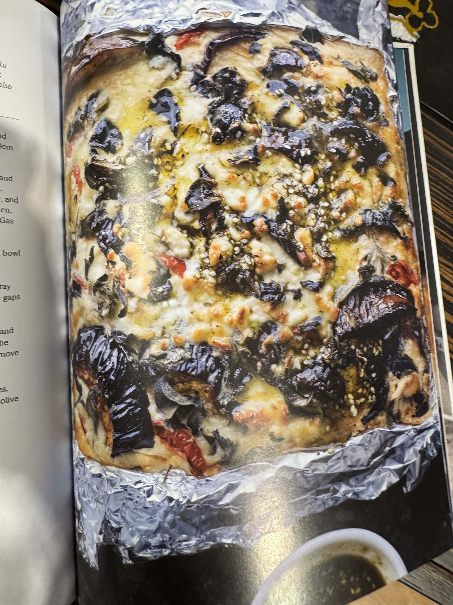

Cheesecake de berenjena y feta
Ingredientes
4×
- 2 berenjenas
- 60 ml de aceite de oliva
- 150 g de feta
- 150 g de queso crema
- 3 huevos
- 60 ml de nata
- 150 g de tomates cherry
- 10 g de orégano fresco
- 1.5 cdtas de za'atar

Preparación
Paso 1
Cortar 2 berenjenas en rodajas de 2cm, pintarlas con 60 ml de aceite de oliva, salpimentar y asarlas 40min a 210ºC. Bajar el horno a 170ºC.
Paso 2
Batir 150 g de feta, 150 g de queso crema, 3 huevos, 60 ml de nata y pimienta.
Paso 3
Colocar las berenjenas casi de pie en un molde cuadrado de 19cm forrado, rellenar los huecos con 150 g de tomates cherry partidos y la mitad de 10 g de orégano fresco. Verter la crema y el resto del orégano.
Paso 4
Hornear 35-40min, hasta que cuaje y se dore. Templar y pintar con 1.5 cdtas de za'atar mezclado con un poco de aceite.